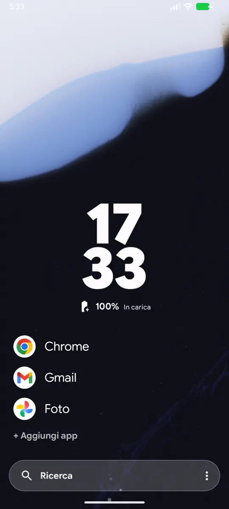

Scegli la tua home
Le app preferite, solo l'orologio o le lettere sul bordo. Tre stili, cambi quando vuoi.
- App fissate
- Solo orologio
- Lettere sul bordo
Veloce, utile e moderno. In poche parole, tuo.
Il launcher per Android che si usa con una mano sola: cerchi tutto dal basso, la settimana è a uno swipe, i widget all'altro. E la batteria quasi non se ne accorge.
Basato su Kvaesitso di MM2-0. Trafitto Launcher è una fork personale e non ufficiale: non è affiliata al progetto originale né supportata da MM2-0, a cui va tutto il merito della base. Per favore non segnalate a loro i problemi di questa fork.
La solida base di Kvaesitso, ripensata per l'uso di tutti i giorni.



Decidi tu cosa vedere e come. Bastano pochi tocchi nelle impostazioni.
Le app preferite, solo l'orologio o le lettere sul bordo. Tre stili, cambi quando vuoi.
Fino a 6 app in home, in alto o in basso, a destra o a sinistra, con l'aspetto che preferisci.
Più alta, più stretta, più tonda, o trasparente come vetro sopra lo sfondo.
Rinominale, spostaci le app che vuoi, creane di nuove. Tocca la matita sul titolo di una sezione.
Una pagina o dieci: aggiungi quelle che ti servono, sempre a uno swipe dalla home.
L'ultima notifica sotto ogni app e uno swipe sull'app per le sue scorciatoie. Spenti finché non li accendi tu.
E in più tutto quello che Kvaesitso sa già fare: temi e colori, pacchetti di icone, stili dell'orologio, gesti. Trovi tutto nella guida di Kvaesitso.
Misurato su un OnePlus Nord, un telefono del 2020. Un launcher resta acceso tutto il giorno: per questo ogni dettaglio è pensato per consumare il meno possibile.
Quando non la tocchi non disegna niente. L'orologio si aggiorna una volta al minuto, i secondi solo se li vuoi.
Meno dello 0,5% di un core. Nessuna animazione che gira mentre il telefono è attaccato al cavo.
Meteo e cambi valuta si aggiornano solo quando c'è rete, i cambi una volta al giorno. Niente risvegli inutili.
Tutto il launcher, ricerca compresa.
Come è stato misurato: OnePlus Nord con Android 12, CPU di tutti i processi del launcher e fotogrammi disegnati, 60 secondi per ogni situazione. 1 ms di CPU al secondo è lo 0,1% di un core.
Gratuito e open source, per Android 8 o successivo. Si installa accanto al launcher che hai già: se non ti convince, torni indietro in un attimo.